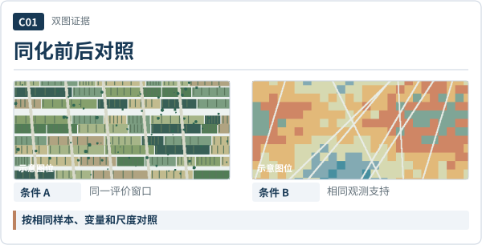
内部关系：两图共享尺度；结论紧邻图
映射：figure-pair · 2 个图位
独立卡片组件，不是 PPT 整页布局。候选来自生图探索后的原创结构复刻；图像是合成演示素材，正式使用必须替换为已核对论文图。卡片结构、中文标题、线框和图注在PPTX中是可编辑对象。

内部关系：两图共享尺度；结论紧邻图
映射：figure-pair · 2 个图位
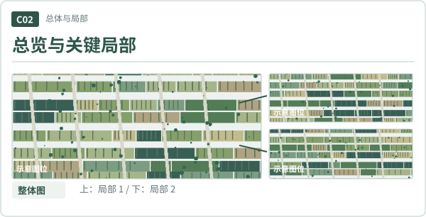
内部关系：放大图需有实际裁切来源
映射：figure-zoom · 3 个图位
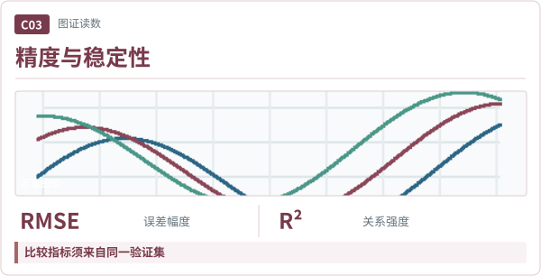
内部关系：指标不等于结果大小
映射：figure-metrics · 1 个图位
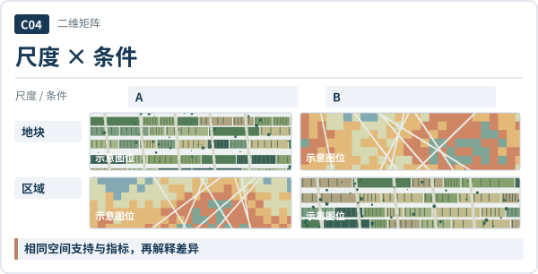
内部关系：比较前先对齐维度
映射：figure-matrix · 4 个图位
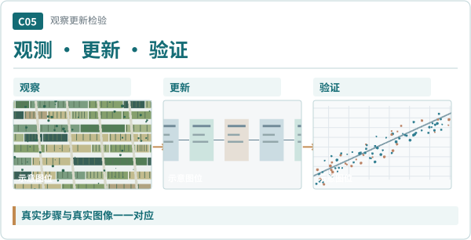
内部关系：阶段必须有真实对应关系
映射：figure-sequence · 3 个图位
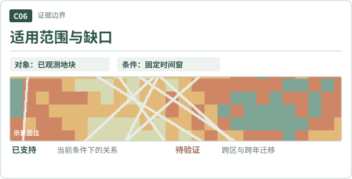
内部关系：限制和判断一起出现
映射：figure-conditions · 1 个图位
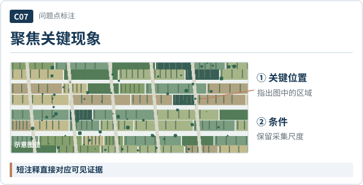
内部关系：注释指向图内具体位置
映射：figure-observation · 1 个图位
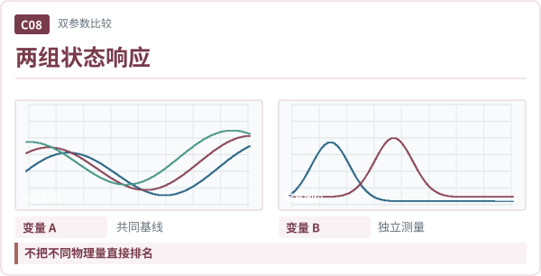
内部关系：共享样本与统计口径
映射：figure-pair · 2 个图位
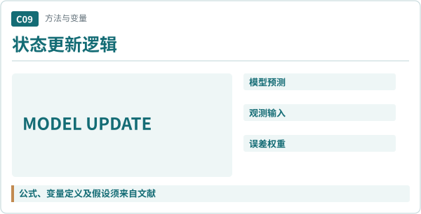
内部关系：不擅自改写公式与符号
映射：method-equation · 1 个图位
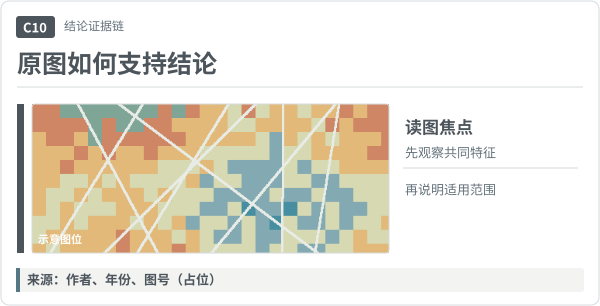
内部关系：来源紧跟原图与解释
映射：figure-caption · 1 个图位
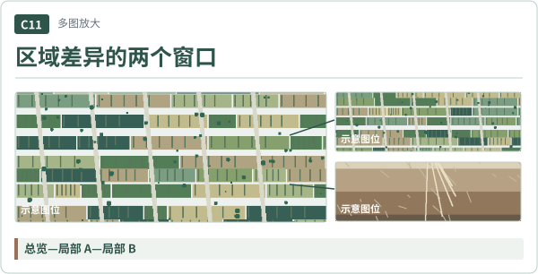
内部关系：局部取景必须可追溯
映射：figure-overview-details · 3 个图位
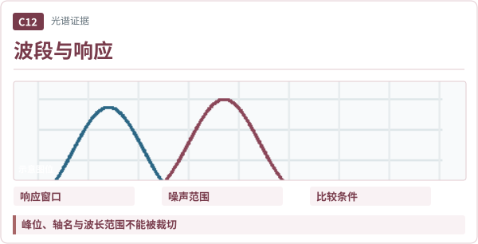
内部关系：数据线由原文替换
映射：figure-metrics · 1 个图位
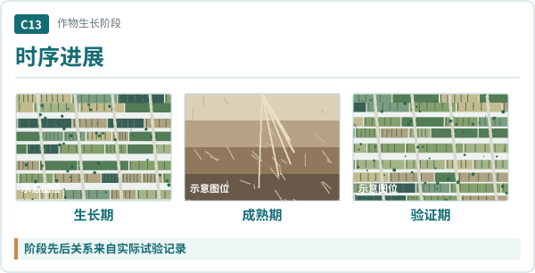
内部关系：阶段有真实时间顺序
映射：figure-sequence · 3 个图位
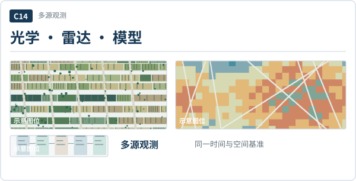
内部关系：分别标注各源与限制
映射：figure-sequence · 3 个图位
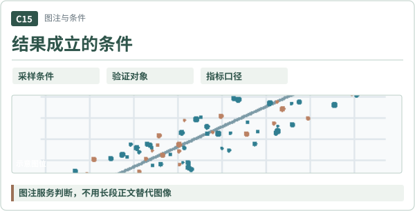
内部关系：保留原图坐标图例
映射：figure-conditions · 1 个图位
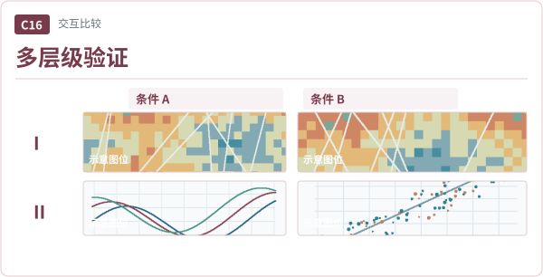
内部关系：不可比较的口径勿硬排
映射：figure-matrix · 4 个图位
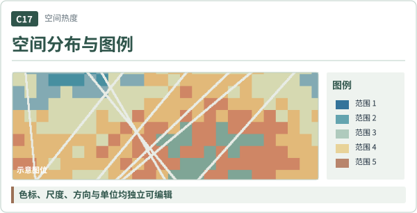
内部关系：色标和空间尺度完整
映射：figure-caption · 1 个图位
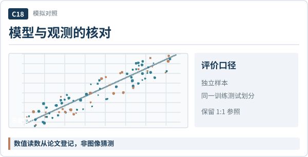
内部关系：独立样本与基线同列
映射：figure-metrics · 1 个图位
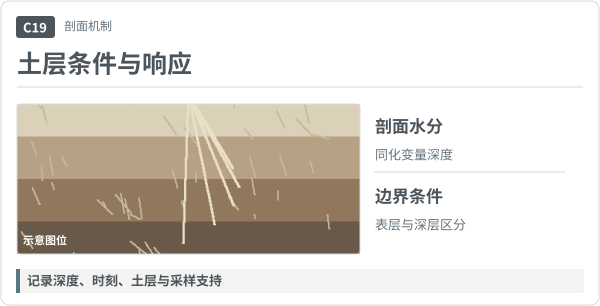
内部关系：物理边界可见
映射：figure-observation · 1 个图位
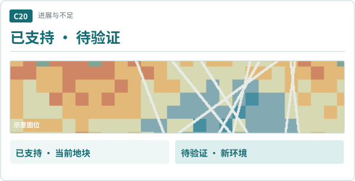
内部关系：一张图两个结论域
映射：boundary-scope · 1 个图位